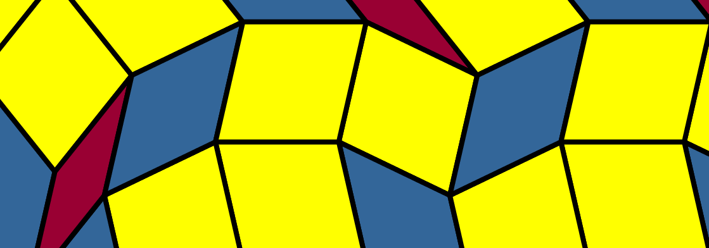

Other pages
Manual
Installation and running
Substitution Editor requires Java to run. Once you have downloaded Java, then you can run the executable .jar file in Windows by double-clicking, or in Linux/Mac by typing the command
java -jar SubstitutionEditor.jarin the terminal, after navigating to the directory where the .jar file is located.
The launcher window
After you have started the program, you should see a window that looks something like this:
This is the launcher window, where you select the properties of the substitution rule that you wish to edit. These properties are the order of symmetry, the edge sequence, and the maximum number of substitutions.
Choosing an order of symmetry
To choose the order of symmetry, select an entry from the drop-down menu in the top left. The default value is 7-fold symmetry, which means that we are working with a substitution rule on the three rhombs with angles that are multiples of 180°/7; if we change to 11-fold symmetry, then we will edit a substitution rule on the five rhombs with angles that are multiples of 180°/11.
Choosing an edge sequence
The next step is to choose an edge sequence. This is done by selecting one of the options from the drop-down menu in the top right. After choosing an edge sequence, check marks will appear in the boxes underneath the rhombs if it is possible to tile inflated copies of them with the given edge sequence. (The meaning of this is explained in more detail below.) If all of the boxes have check marks, then the Go! button in the lower left will be activated, and you can launch the editor. If not, then you have to choose a different edge sequence.
What the edge sequence represents
The picture below depicts a tiled region that is shaped like the middle tile in the picture of the launcher, above, except it is inflated and its edges are distorted. The edge sequence [1, -1, 0, -2, 2, 3, -3, 0, 1, -1, -2, 2, 0, 1, -1, -4, 4, 3, -3, -2, 2, 1, -1, 0] describes this distortion.

If you follow the top edge, starting at the top left and moving toward the top right, you will first see a shallow dip, followed by an equally shallow incline. The dip is at an angle of 1*180°/11 below the horizontal, while the incline is at an angle of 1*180°/11 above the horizontal. Corresponding to this, the first two entries in the edge sequence are 1 and -1. Continuing along the top edge, you see a flat line, then a steeper incline (in fact an angle of 2*180°/11 above the horizontal), then a steeper dip (at an angle of 2*180°/11 below the horizontal). Corresponding to this, the next three entries in the edge sequence are 0, -2, and 2. And so it goes.
This region has been tiled by copies of the five rhombs with angles that are multiples of 180°/11. Because it is possible to do this, a check mark appears in the box underneath the middle tile when you choose this edge sequence. For some edge sequences, it is not possible to tile the region with these shapes.
Creating an edge sequence
It is also possible to create your own edge sequence by typing one into the drag-down menu in the top right of the launcher window. After typing in a sequence and pressing enter, check marks will appear in the boxes underneath the rhombs that can be tiled with this edge sequence.

In the image above, only the third and fourth rhombs can be tiled. This is typical: for a randomly chosen edge sequence, probably most of the inflated rhombs will not be tilable. Also the rhombs with small angles are usually harder to tile than the ones without small angles.
If you are interested in searching for new edge sequences, the class RhombBoundary.java has some methods for searching for edge sequences by brute force. You can use these methods by downloading the Java code, modifying the main method in RhombBoundary, and then running RhombBoundary (instead of Launcher).
Choosing the maximum number of substitutions
You can also choose the maximum number of substitutions allowed in the editor by selecting an option from the drop-down menu in the bottom right. Don't worry if it isn't clear yet what this means; it will become clear once you've launched the editor. It's probably best to choose the default maximum (2 substitutions) unless you are using a small edge sequence. For example, with 7-fold symmetry and an edge sequence of [1, -1, 0, 1, -1, -2, 2, 0], you might want to go up to a maximum of 3 substitutions.

The editor window
After pressing the Go! button, you should see a window that looks something like this.
The editor in this image was created by choosing 7-fold symmetry, the edge sequence [1, -1, 0, 1, -1, -2, 2, 0], and a maximum of 3 substitutions in the launcher window. The three pictures at the top are called the rhomb displays; they represent inflated and distorted copies of the three rhombs from the launcher window. The picture at the bottom is called the patch display; it represents a typical patch in a substitution tiling arising from the substitution rule represented by the three rhomb displays.
Supertile outlines
What does it mean to say that the patch display is a "typical patch in a substitution tiling arising from the substitution rule represented by the three rhomb displays"? The easiest way to answer this is to select the supertiles button from the View menu.
After this, the patch display should contain black outlines, as in the following picture:
The patterns contained within these outlines are rotations and translations of the three rhomb displays. In order to understand why the outlines appear the way that they do, let us select a different level in the View menu.
Changing the level
In the View menu, select Level 1.
Now the patch display should look something like this:

For comparison, here is the Level 2 patch display again, with Supertiles on:
Notice that, wherever there is an outlined region at Level 2, there is a single tile at Level 1. These Level 1 tiles are called the Supertiles, and at Level 2 they have been cut into pieces according to the pictures in the rhomb displays. If we cut these tiles into pieces again, we obtain the Level 3 patch display:
Level 3 is a bit crowded, and by default the editor only goes up to Level 2, but this editor was created by choosing Maximum 3 substitutions in the launcher. With a longer edge sequence, Level 3 would probably be too blurry to see anything of interest.
What happens if we select Level 0?
At Level 0, the patch display is all yellow. This is because the Level 0 image is just a rectangular window cut out of the middle of the yellow rhomb. Likewise, the Level 1 image is a rectangular window cut out of the middle of the rhomb display corresponding to the yellow rhomb.
If we cut up the rhombs inside this rhomb display again, then take a rectangle out of the middle, we get the Level 2 image. And if we cut up the rhombs a third time, we get the Level 2 image.
Editing the rhomb displays
If you move the mouse cursor over the rhomb displays, you will see that some of the rhombs turn red when you hover over them. This happens if you hover over a group of three rhombs that come together to form a hexagon:
Clicking on this red hexagon causes it to rotate 180° about its centre:
This rotation causes a change in the patch display in all of the supertiles that come from the yellow rhomb. Here are the before and after pictures.
If you look carefully, you can see that a new blue 7-pointed star has been created at the middle of the after picture; this is the result of flipping three hexes that all share a common vertex. This is what is meant by "editing"—Substitution Editor is an editor because it allows you to change a substitution by performing these types of rotations.
The purpose of Substitution Editor, inasmuch as it has a purpose, is to allow the user to fix up this kind of substitution rule and make it look nice. Of course, "nice" is a matter of personal taste, but typically symmetry is considered nice. The picture below depicts a configuration with more symmetry that can be reached from the editor that we started with by applying a sequence of hexagon rotations:
Antialiasing
The View menu also contains a check box labelled Antialiasing:
If you select this box, it reduces the rasterization of the outlines of the rhombs in the patch display, resulting in a nicer image.
The downside of this is that it takes longer to render, which makes editing slower.
Changing colours
The Edit menu contains a button for changing colours.
Pressing this button brings up the Colour palette window.
Clicking on one of the colour swatches changes the colour of the currently selected rhomb. The radio buttons at the bottom of the Preview area allow to change which rhomb is currently selected.
The colour change also appears in the rhomb displays and the patch display.
Some of you might notice from the above image that I'm working on this instruction manual at 9:49pm, which is indeed a bit late.
The File menu
The File menu contains various buttons for saving, opening, and beginning new editors.
The New button opens a new editor. Ctrl-n is the keyboard shortcut for this. If you try to open a new editor, the current editor will first check if you want to save your work.
The Save button allows you to save the current editor. The keyboard shortcut for this is Ctrl-s. The default file extension for the saved files is .sub.
The Open button allows you to open a previously saved editor. The keyboard shortcut for this is Ctrl-o. This will also prompt you to save your work. As the code is currently written, the program will crash if you try to open a file that is not a previously saved editor.
The Quit button is self explanatory. The keyboard shortcut is Ctrl-q, and you will be prompted to save your work.
PostScript output
The Save image button allows you to save a copy of the patch display in PostScript format. It will come out upside-down. Sorry.
The image below is not actually a PostScript image, because PostScript does not go well with all web browsers. The image below is what you get if you convert the PostScript output to .png format.
The advantage of PostScript is that it's vector based and easy to edit. For example, here are the first 80 lines of the PostScript file that produces the picture above.
%!PS-Adobe-2.0 EPSF-1.2
%%BoundingBox: 70 -731 1189 -339
%!PS-Adobe-2.0 EPSF-1.2
%! PostScript program
28.3464 28.3464 scale % after this coordinates are in cm
0.04 setlinewidth
1 setlinejoin
1 setlinecap
4 4 translate
/sc 1 def
/unit{sc mul}def
/c1 180 7 div cos def
/c2 360 7 div cos def
/c3 540 7 div cos def
/s1 180 7 div sin def
/s2 360 7 div sin def
/s3 540 7 div sin def
/heptorth{
/z exch def /y exch def /x exch def /w exch def /v exch def /u exch def
u v c1 mul add w z sub c2 mul add x y sub c3 mul add unit
v s1 mul w z add s2 mul add x y add s3 mul add unit
}def
% instructions for drawing tiles
/t1{
0.6 0.0 0.2 setrgbcolor
0 unit 0 unit moveto
1 0 0 0 0 0 heptorth lineto
1 -1 0 0 0 0 heptorth lineto
0 -1 0 0 0 0 heptorth lineto
fill
0 0 0 setrgbcolor
newpath
0 unit 0 unit moveto
1 0 0 0 0 0 heptorth lineto
1 -1 0 0 0 0 heptorth lineto
0 -1 0 0 0 0 heptorth lineto
closepath
stroke
}def
/t2{
0.2 0.8 1.0 setrgbcolor
0 unit 0 unit moveto
1 0 0 0 0 0 heptorth lineto
1 0 0 -1 0 0 heptorth lineto
0 0 0 -1 0 0 heptorth lineto
fill
0 0 0 setrgbcolor
newpath
0 unit 0 unit moveto
1 0 0 0 0 0 heptorth lineto
1 0 0 -1 0 0 heptorth lineto
0 0 0 -1 0 0 heptorth lineto
closepath
stroke
}def
/t3{
0.2 0.4 0.6 setrgbcolor
0 unit 0 unit moveto
1 0 0 0 0 0 heptorth lineto
1 0 0 0 0 -1 heptorth lineto
0 0 0 0 0 -1 heptorth lineto
fill
0 0 0 setrgbcolor
newpath
0 unit 0 unit moveto
1 0 0 0 0 0 heptorth lineto
1 0 0 0 0 -1 heptorth lineto
0 0 0 0 0 -1 heptorth lineto
closepath
stroke
}def
The next 2691 lines of the file contain instructions for drawing all of the different rhombs. For example:
gsave 3 -8 -4 -14 -6 -11 heptorth translate 257.14285714285717 rotate t3 grestore
So if you can work out what the PostScript code means, then you can modify it and change how the rhombs look.